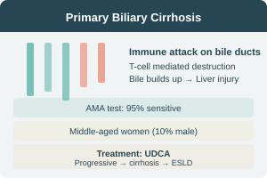

Primary Biliary Cirrhosis — Overview
Essentials for Diagnosis
- Most patients initially asymptomatic
- Eventually develop fatigue & pruritus
- Consider PBC in any patient with cholestatic LFT pattern
- AMA is 95% sensitive for diagnosis
- Common in middle-aged females (10% males)
- Progressive → cirrhosis → ESLD
- UDCA is main known treatment
Pathogenesis & Etiology
Pathogenesis
T-cell mediated immune destruction of intrahepatic bile ducts → cholestasis → secondary liver injury from retained bile & copper → cirrhosis → ESLD
Etiology
- Genetic predisposition
- Environmental: viruses, bacteria, toxins, mercury
- Autoimmunity: immune-mediated bile duct destruction
